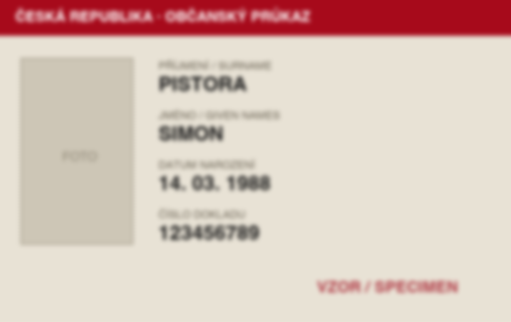
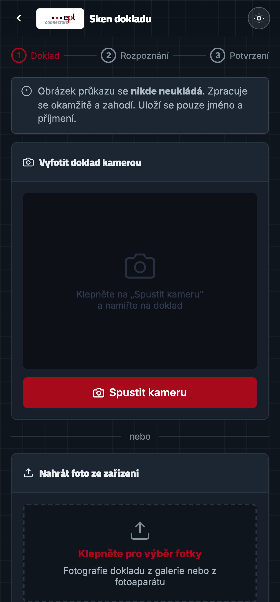
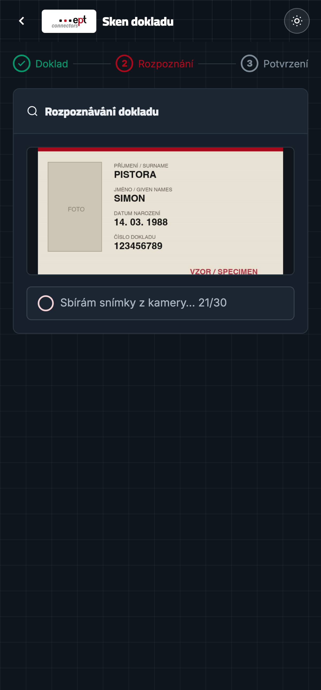

ept connectors · Habartov
Návštěvník ukáže doklad.
Jméno se zapíše samo.
Digitální kniha návštěv s rozpoznáváním dokladů, které běží celé
u nás v budově, bez cloudu a bez ukládání fotek.
Prezentace pro vedení společnosti · 31. 7. 2026
 1
1
Výchozí stav
Ručně psaná kniha se nedá přečíst
Přepis vytváří chyby
Recepční slyší jméno a píše ho podle sluchu. „Nowak“ místo „Novák“,
„Schmid“ místo „Schmied“. Chybu nikdo nikdy neodhalí, protože není
s čím porovnat.
Zdržuje u vstupu
Hláskování jména a firmy trvá u každého návštěvníka desítky sekund.
Při ranní špičce se u vrátnice tvoří fronta.
Nedohledá se
Kdo tu byl třetího dubna odpoledne? Odpověď znamená listovat knihou
a luštit cizí rukopis, pokud je ta stránka vůbec čitelná.
Papír neumí ověřit, že to, co je v něm napsané, odpovídá dokladu.
Stroj to umí přečíst přímo z něj.
Rozpoznávání dokladů · ept connectors
2
Jádro řešení
Z dokladu rovnou do evidence
Návštěvník jen zkontroluje, co systém přečetl, doplní firmu a potvrdí.
Fotka se v tu chvíli zahodí.
Rozpoznávání dokladů · ept connectors
3
Jak to čte
Pět kroků mezi kamerou a jménem
1
Série snímků
Ne jedno cvaknutí. Telefon nasbírá 30 snímků za zhruba
čtyři sekundy.
→
2
Měření ostrosti
U každého snímku se spočítá energie hran, tedy míra, jak je text ostrý.
→
3
Seřazení
Snímky se seřadí od nejostřejšího. Rozmazané jdou na konec fronty.
→
4
Čtení
Na rozpoznání jde až 12 nejostřejších, dokud není
jméno i příjmení.
→
5
Zápis
Do evidence jde kanonická podoba jména, ne to, co OCR
doslova vidělo.
Proč to není jen „vyfoť a přečti“
Fotka z ruky bývá rozmazaná, na kartě je odlesk, autofokus doostřuje.
Jeden snímek je sázka. Třicet snímků a výběr toho nejlepšího je metoda.
Skládá se napříč snímky
Na jednom snímku je čitelné příjmení, na jiném jméno. Systém bere
první spolehlivou hodnotu každého pole zvlášť. Nečeká, až bude
jeden snímek dokonalý.
Rozpoznávání dokladů · ept connectors
4
Měřeno, ne odhadnuto
Proč se vybírá nejostřejší snímek
Stejný doklad, stejný engine. Jediný rozdíl je ostrost, a ta rozhoduje
o tom, jestli se jméno přečte, nebo ne.
Simon Pistorajméno i příjmení přečteno
14 řádků textu · 2,05 s (první čtení po startu)

Nictext nečitelný, pole zůstanou prázdná
6 řádků textu · 1,02 s
Z rozmazaného snímku engine vytáhl 6 řádků místo 14,
a jméno mezi nimi nebylo. Proto se sbírá série.
Rozpoznávání dokladů · ept connectors
5
Detail, který rozhoduje
Ostrost se měří uvnitř rámečku
- Naivní řešení měří celý záběr. Jenže pak vyhraje
vzorovaný ubrus na stole nebo hologram na kartě. Mají spoustu
kontrastních hran.
- Vybral by se snímek, kde je pozadí ostré a text rozmazaný.
Přesně naopak, než potřebujeme.
- Proto se hodnotí jen výřez skenovacího rámečku,
tedy oblast, kam se karta vycentruje.
- Měří se na zmenšeném plátně, aby to zvládl telefon
třicetkrát za sebou bez sekání.
Rozpoznávání dokladů
6
Od pixelů ke jménu
Co engine přečte a co se opravdu zapíše
Surový výstup rozpoznávání
ČESKÁ REPUBLIKA
OBČANSKÝ PRŮKAZ
PŘÍJMENÍ / SURNAME
PISTORA
JMÉNO / GIVEN NAMES
SIMON
DATUM NAROZENÍ
14. 03. 1988
ČÍSLO DOKLADU
123456789
Skutečný výstup z měření: 14 řádků, z toho dva jsou jméno.
- Čte se podle rozvržení dokladu, ne hledáním
v jedné dlouhé změti textu. Systém ví, že jméno stojí pod popiskem
„PŘÍJMENÍ“ a končí tam, kde začíná datum narození.
- Hlavičkové výrazy se ignorují. „REPUBLIKA“ ani
„SURNAME“ se nikdy nestane jménem návštěvníka.
- Porovnává se bez diakritiky, aby „PISTORA“
z dokladu sedlo na „Pištora“ i při nedokonalém čtení.
- Zapíše se kanonická podoba: správně napsané jméno
z evidence, ne velká písmena z dokladu.
Rozpoznávání dokladů · ept connectors
7
Technologie
Dva enginy, oba u nás v budově
Hlavní engine: EasyOCR
Neuronová síť, která běží lokálně
na stroji u vrátnice. Na fotkách z telefonu čte výrazně líp než klasické
OCR a vrací i pozice jednotlivých slov, díky tomu jde číst podle
rozvržení dokladu.
Model se stáhne jednou a pak funguje bez připojení k internetu.
Záloha: Tesseract
Klasické OCR s českým jazykovým
modelem. Nastoupí, když EasyOCR není k dispozici, takže sken funguje
i tehdy.
Přepnutí je automatické, obsluha o něm neví.
Žádná cloudová služba. Snímek dokladu neopustí budovu.
Nejde na cizí server, nikam se nenahrává a po přečtení se zahodí. To je
podstatný rozdíl proti běžným online OCR nástrojům.
Rozpoznávání dokladů · ept connectors
8
Naměřeno na tomto řešení
Čísla
1,0 s
ustálená doba přečtení jednoho snímku
30
snímků v sérii, ~4 s sbírání
0
uložených fotek dokladů
První čtení po startu
Zhruba dvě sekundy, protože se jednorázově načítá model. Každé další už jede
v ustálené jedné sekundě.
Nejvýš 12 pokusů
Na rozpoznání jde jen dvanáct nejostřejších snímků ze třiceti. Zbytek
by čas jen prodlužoval bez užitku.
Zastaví se, jakmile to má
Když druhý snímek dá jméno i příjmení, zbylých deset se nezpracovává.
Obvyklý sken je proto rychlejší než nejhorší případ.
Rozpoznávání dokladů
9
Jak to vypadá
Celý sken na telefonu návštěvníka

1 · Otevře stránku
Nic neinstaluje
2 · Zamíří na doklad
Rámeček vede záběr

3 · Sbírá sérii
Vidí průběh, ne prázdno
4 · Zkontroluje
Jméno je předvyplněné
Rozpoznávání dokladů · ept connectors
10
Ochrana údajů
Méně údajů než papírová kniha
- Fotka dokladu se nikdy neukládá. Zpracuje se
v paměti a zahodí, na disk ani do databáze se nedostane.
- Z dokladu se bere jen jméno a příjmení. Ne číslo
dokladu, ne datum narození, ne adresa. Ostatní řádky systém přečte,
ale zahodí.
- Rozpoznávání běží lokálně. Žádný snímek neodchází
do internetu ani do cloudové služby.
- Evidence není veřejně vidět, na rozdíl od otevřené
knihy ležící na pultu.
- Každá změna je dohledatelná v auditním záznamu.
Co se opravdu uloží
| Jméno a příjmení | ano |
| Organizace, SPZ, telefon | nepovinné |
| Čas příchodu a odchodu | ano |
| Fotka dokladu | nikdy |
| Číslo dokladu | nikdy |
| Datum narození | nikdy |
Rozpoznávání dokladů · ept connectors
11
Druhá strana
Co z toho vidí recepce

- Kdo je právě v budově a jak dlouho. Doba se počítá
živě, přehled se sám obnovuje.
- Tisk vydá seznam osob v budově se sloupcem na podpis.
Papírová kniha zůstane uvnitř, tenhle list odejde s hlídkou.
- Audit ukáže historii akcí včetně pokusů o duplicitní
zápis.
- Export stáhne celou evidenci do Excelu.
- Duplicitu systém odmítne: kdo už je uvnitř, nezaloží
se podruhé.
Rozpoznávání dokladů · ept connectors
12
Poctivě
Co ještě chybí do ostrého provozu
Dnešní stav je funkční prototyp v testovacím provozu. Tohle jsou
známé mezery, je lepší je pojmenovat teď než je nechat objevit později.
| Oblast | Stav | Co je potřeba |
|---|
| Rozsah rozpoznávání | omezené |
Systém je nastavený na dva konkrétní lidi. Rozšíření na libovolný doklad
vyžaduje víc testovacích vzorků a doladění. |
| Spolehlivost přiřazení | ladí se |
Shoda se opírá o podobnost textu. U cizího dokladu může dojít
k chybnému přiřazení, před ostrým provozem nutné zpřísnit. |
| Databáze | nešifrovaná |
Soubor SQLite bez šifrování. Pro ostrý provoz zašifrovat nebo přesunout na server. |
| Přihlašování | společné PINy |
Dva sdílené PINy místo osobních účtů, nelze rozlišit, který pracovník co udělal. |
| Doba uchování | neřešeno |
Záznamy se nemažou. Potřeba nastavit lhůtu a automatický výmaz. |
| Zálohování | neřešeno |
Zatím ruční kopie souboru, potřeba pravidelná automatická záloha. |
| Sken, evidence, tisk, audit, export | funguje |
Otestováno na běžícím systému. |
Rozpoznávání dokladů · ept connectors
13
Co dál
Návrh dalších kroků
1. Pilot na vrátnici
Dva až tři týdny, papírová kniha
běží paralelně jako záloha.
· zpřísnit přiřazení jmen
· osobní účty místo PINů
· automatická záloha
· informační cedule u vstupu
2. Ostrý provoz
Papír se odloží, systém je jediná
evidence.
· rozpoznávání libovolného dokladu
· šifrovaná databáze
· doba uchování a výmaz
· zaškolení recepce
3. Rozšíření
Až základ běží spolehlivě.
· upozornění hostiteli při příchodu
· tisk jmenovky návštěvníka
· více vstupů a budov
· reporty pro management
Co potřebujeme rozhodnout dnes
1. Jdeme do pilotu na vrátnici, a od kdy? ·
2. Kdo je vlastníkem na straně EPT: IT, bezpečnost, provoz? ·
3. Jaká je požadovaná doba uchování záznamů? ·
4. Poběží to na serveru EPT, nebo na vyhrazeném stroji u vrátnice?
Děkuji za pozornost
14